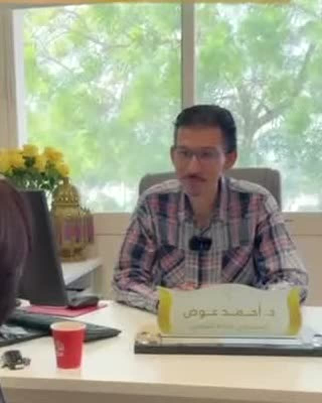
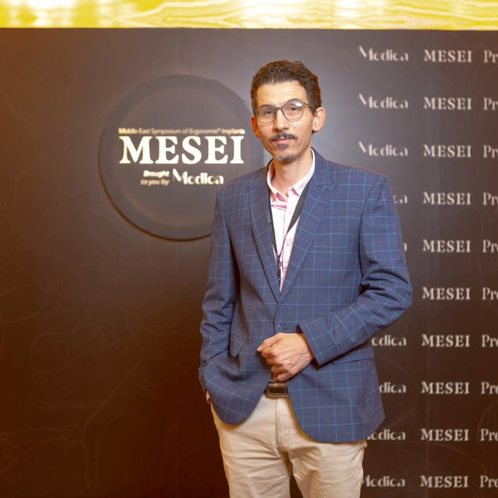

جدة، المملكة العربية السعودية Jeddah, Saudi Arabia
أحمد عوض Ahmed Awad
استشاري جراحات التجميل والترميم Consultant Plastic & Reconstructive Surgeon
أكثر من 20 عاماً في جراحة التجميل والترميم — بين مستشفى حكومي وممارسة خاصة واستشارات، من نحت الجسم إلى جراحة اليد والمجهرية. حاصل على زمالة البورد الأوروبي للجراحة التجميلية (EBOPRAS) وزمالة البورد العربي للتخصصات الصحية. Over 20 years in plastic and reconstructive surgery — across a government hospital, private practice, and consultancy. Focused on body contouring and hand & microsurgery. Fellow of the European Board of Plastic, Reconstructive and Aesthetic Surgery (EBOPRAS) and the Arab Board of Health Specialities.
«مهمة جداً اختيار الجراح المناسب.» “Choosing the right surgeon is very important.” بكلماته هو، من مقطع حقيقي على إنستغرام In his own words, from a real Instagram reel
عشرون عاماً، اسم واحدTwenty years. One name.
بدأ د. أحمد عوض مسيرته جراحاً للتجميل والترميم في مستشفى النور التخصصي بمكة المكرمة عام 2006، ضمن القطاع الحكومي، قبل أن يفتح ممارسته الخاصة، ثم يتحول اليوم إلى استشاري جراحة تجميل في جدة. لا يدير عيادة أو فريقاً ثابتاً — بل يمارس التجميل والترميم باسمه الشخصي وسمعته المهنية المبنية على عقدين من العمل السريري المتواصل.
تخصصه الدقيق يجمع بين نحت الجسم وجراحة اليد والمجهرية والحشوات التجميلية، إلى جانب اهتمام بالبحث السريري والتعليم الطبي — امتداد لتكوين أكاديمي بدأ في مصر وتعمّق في برشلونة.
Dr. Ahmed Awad began his career as a plastic and reconstructive surgeon at Alnoor Specialist Hospital in Makkah in 2006, within the public health sector, before opening his own private practice — and today practices as a consultant plastic surgeon in Jeddah. He does not run a clinic or a fixed team — he practices under his own name and a professional reputation built over two decades of continuous clinical work.
His focus combines body contouring with hand and microsurgery and aesthetic fillers, alongside an interest in clinical research and medical education — an extension of academic training that began in Egypt and deepened in Barcelona.

الوجه خلف عشرين عاماً من العمل الجراحيThe face behind twenty years of surgical work
إطار حقيقي، لا صورة معدّة، مأخوذ من لقطة استشارة حقيقية معه.A real, unstaged frame — extracted from his own real consultation footage.
إطار حقيقي من مقطع فيديو حقيقي لاستشارة، عيادات لمسة A real frame from a real consultation video, Lamsa Clinics
لحظات حقيقية، لا صور تخيليةReal moments, not stock imagery
كل ما يلي مأخوذ من حساباته الحقيقية على وسائل التواصل — بلا تلفيق أو استبدال.Everything below is pulled directly from his own real social accounts — nothing staged, nothing substituted.

مؤتمر موتيفا لجراحات الثدي المتقدمة — الرياضMotiva Advanced Breast Surgery Conference — Riyadh
من فعاليات "الملتقى الشرق أوسطي لزراعات إرجونوميكس" (MESEI)، فبراير 2026. حضور علمي موثّق، لا مجرد ادعاء.From the Middle East Symposium of Ergonomix® Implants (MESEI), February 2026. Documented scientific attendance, not just a claim.
إنستغرام، 16 فبراير 2026 Instagram, Feb 16, 2026
شدّ الجفون — تعليم ما قبل الجراحةEyelid Lift — Pre-Operative Marking
لحظة حقيقية من غرفة العمليات في عيادات لمسة، جدة — لا تمثيل ولا مؤثرات، توثيق فعلي لممارسته اليومية.A real operating-room moment at Lamsa Clinics, Jeddah — not staged, not dramatized, an actual documented moment from his day-to-day practice.
إنستغرام، 17 فبراير 2026 Instagram, Feb 17, 2026
من المستشفى الحكومي إلى الاستشاراتFrom public hospital to consultancy
عقدان من العمل الجراحي المتصل، موثّقان بثلاث محطات مهنية واضحة.Two uninterrupted decades of surgical work, across three clearly documented career chapters.
جراح تجميل — مستشفى النور التخصصيPlastic Surgeon — Alnoor Specialist Hospital
مستشفى تابع لوزارة الصحة، مكة المكرمة. مرحلة تأسيسية طويلة في الجراحة العامة والترميمية ضمن القطاع الحكومي.A Ministry of Health hospital in Makkah. A long foundational chapter in general and reconstructive surgery within the public health system.
جراح تجميل — ممارسة خاصة، مكة المكرمةPlastic Surgeon — Private Practice, Makkah
عيادة "أروكات الجمال" الخاصة. مرحلة الاستقلالية المهنية الكاملة، بإدارة ممارسته الخاصة لمدة خمس سنوات.His own private practice, "Arwekat Aljamal". A chapter of full professional independence, running his own practice for five years.
استشاري جراحة تجميل — جدةConsultant Plastic Surgeon — Jeddah
يمارس حالياً بصفة استشاري في جدة. لا عنوان ثابتاً أو ساعات عمل معلنة — التواصل المباشر عبر واتساب هو القناة الأساسية لأي استفسار أو حجز موعد.Currently practicing as a consultant in Jeddah. No fixed address or published hours — direct WhatsApp contact is the primary channel for any inquiry or appointment.
من القاهرة إلى برشلونةFrom Cairo to Barcelona
خمسة مؤهلات موثّقة، امتدت على مدى عشرين عاماً من التكوين الأكاديمي المستمر.Five documented qualifications, spanning twenty years of continuous academic formation.
بكالوريوس الطب والجراحة — جامعة الزقازيقMBBS — Zagazig University
مصرEgypt
ماجستير وبرنامج إقامة جراحة التجميل — جامعة عين شمسMaster's & Residency, Plastic Surgery — Ain Shams University
القاهرة، مصرCairo, Egypt
زمالة البورد الأوروبي للجراحة التجميلية والترميمية (EBOPRAS)Fellow, European Board of Plastic, Reconstructive & Aesthetic Surgery (EBOPRAS)
أوروباEurope
ماجستير الجراحة الميكروسكوبية الترميمية — جامعة برشلونة المستقلةMaster's, Reconstructive Microsurgery — Universitat Autònoma de Barcelona
برشلونة، إسبانياBarcelona, Spain
زمالة البورد العربي للتخصصات الصحية — جراحة التجميلFellowship, Arab Board of Health Specialities — Plastic Surgery
العالم العربيArab region
بكلماته هو، لا نص تسويقيIn his own words, not marketing copy
منشور تثقيفي حقيقي كتبه بنفسه على إنستغرام — معروض هنا كاملاً كما نشره.A real educational post he wrote himself on Instagram — reproduced here in full, exactly as posted.
عمليات جراحية تهدف إلى تقليل حجم ووزن الثدي مع تحسين شكله، وتُجرى لأسباب طبية وتجميلية.
Surgical procedures aimed at reducing the size and weight of the breast while improving its shape — performed for both medical and cosmetic reasons.
- آلام مزمنة في الظهر والرقبة والكتفين
- تقرحات أو التهابات أسفل الثدي
- صعوبة في الحركة أو ممارسة الرياضة
- عدم تناسق الجسم أو مشاكل نفسية بسبب كِبر الحجم
- Chronic pain in the back, neck, and shoulders
- Skin irritation or infection under the breast
- Difficulty moving or exercising
- Body asymmetry or psychological difficulty caused by breast size
- اكتمال نمو الثدي
- ثبات الوزن نسبياً
- عدم التخطيط القريب للحمل أو الرضاعة (يُفضّل)
- صحة عامة جيدة
- Breast growth is complete
- Relatively stable weight
- No near-term plans for pregnancy or breastfeeding (preferred)
- Good general health
- مكان الندبات: حول الهالة، وخط طولي لأسفل الثدي، وأحياناً خط أفقي (شكل حرف T)
- العودة للحياة اليومية: بعد 1–2 أسبوع
- الرياضة: بعد 4–6 أسابيع
- ارتداء مشد طبي: 4–6 أسابيع
- النتيجة النهائية تظهر خلال 3–6 أشهر
- Scar placement: around the areola, a vertical line down the breast, and sometimes a horizontal line (a "T" shape)
- Return to daily life: after 1–2 weeks
- Exercise: after 4–6 weeks
- Wearing a medical compression garment: 4–6 weeks
- Final result appears within 3–6 months
- تورم أو كدمات
- تغيّر مؤقت أو دائم في الإحساس بالحلمة
- صعوبة محتملة في الرضاعة
- اختلاف بسيط في التناسق
- Swelling or bruising
- Temporary or permanent change in nipple sensation
- Possible difficulty breastfeeding
- Slight asymmetry
منشوره الحقيقي على إنستغرام، 30 ديسمبر 2025 His real Instagram post, Dec 30, 2025
حيث يتركز عملهWhere his practice concentrates
كما وصفها بنفسه — بلا مبالغة أو قائمة إجراءات تسويقية.As described in his own words — not a marketing procedure list.
نحت الجسمBody Contouring
إعادة تشكيل ملامح الجسم بمقاربة جراحية دقيقة.
Surgical reshaping of body contours with precision.
جراحة اليد والمجهريةHand & Microsurgery
تخصص دقيق مبني على ماجستير الجراحة الميكروسكوبية في برشلونة.
A precise specialty grounded in the Barcelona microsurgery master's.
الحشوات التجميليةAesthetic Fillers
إجراءات غير جراحية لتحسين ملامح الوجه.
Non-surgical procedures to refine facial features.
البحث السريريClinical Research
اهتمام مستمر بالمستجدات العلمية في التخصص.
A continued interest in the specialty's evolving evidence base.
التعليم الطبيMedical Education
مشاركة في نقل الخبرة ضمن الأوساط الطبية.
Involvement in passing on expertise within medical circles.
مراجعات حقيقية، لا نجوم مجردةReal reviews, not just stars
أربع مريضات تحدثن أمام الكاميرا بعد عملياتهن الحقيقية — وجوههن محمية دائماً، وكلماتهن كما قيلت تماماً، منقولة حرفياً من الترجمة الظاهرة في الفيديو الأصلي.Four real patients spoke on camera after their real procedures — their faces protected throughout, their words exactly as said, transcribed verbatim from the burned-in captions in the original footage.
«هذي العملية الـ٣ معاك دكتور» “This is my third procedure with you, doctor.”
مريضة حقيقية — رفع وتكبير الثدي ذاتياً (نقل دهون)، لقاء في العيادة Real patient — breast lift with autologous (fat-transfer) augmentation, in-office interview
مقطع مقابلة حقيقي، عيادات لمسة Real interview clip, Lamsa Clinics
«ما أقدر أوصف يعني» “I honestly can't put it into words.”
مريضة حقيقية — زيارة متابعة منزلية بعد الجراحة Real patient — home follow-up visit after surgery
مقطع مقابلة حقيقي، زيارة منزلية Real interview clip, home visit
«الدكتور أحمد معايا متابع» “Dr. Ahmed stays with me, following up.”
مريضة حقيقية — تكبير الصدر بالإمبلانت Real patient — breast augmentation with implants
من ترجمة فيديو حقيقي (لم يُعرض المقطع هنا) From a real video's captions (clip not shown here)
«شفط ونحت وقص البطن... ويقعد يشرح، يعني لا تترددوا» “Liposuction, contouring, a tummy tuck… he takes the time to explain. Honestly, don't hesitate.”
مريضة حقيقية — شفط دهون ونحت وشدّ للبطن Real patient — liposuction, body contouring & abdominoplasty
من ترجمة فيديو حقيقي (لم يُعرض المقطع هنا) From a real video's captions (clip not shown here)
جميع المقاطع من مقابلات حقيقية أجرتها عيادات لمسة مع مريضات حقيقيات بعد عملياتهن الفعلية — لا تمثيل ولا تعويض بممثلين. تم اختيار الاقتباسات بعد مشاهدة كامل مدة كل فيديو (من 43 إلى 99 ثانية). All clips are from real interviews Lamsa Clinics conducted with real patients after their actual procedures — nothing staged, no actors. Quotes were selected after watching each video's full duration (43–99 seconds).
ماذا يقول مرضاه على جوجلWhat his patients say on Google
38 تقييماً موثقاً على خرائط Google، بحسب آخر رصد في أغسطس 2026 — عشرة منها معروضة هنا كنموذج حقيقي، بأسماء وتواريخ حقيقية، بلا صور مُلفّقة للمُراجِعات. 38 reviews on Google Maps, as last checked in August 2026 — ten shown here as a real sample, with real names and dates, no invented reviewer photos.
من خرائط جوجل، تم رصدها في أغسطس 2026 From Google Maps, pulled in August 2026
Dr Ahmad he is very professional in his surgeries, thanks a lot.
كل الشكر والتقدير لدكتور أحمد عوض 🙏🏻🤍
الله يسعده قمة في الأخلاق والاحترافية والله وآمين يقولك ايش تحتاجي بالزبط بدون كلام كثير، سويت معاه mini face lift ومو ندمانة أبداً
I would like to express my deepest gratitude to my plastic surgeon, Dr. Ahmed Awad, for my breast augmentation surgery! From the very first consultation, I felt calm and confident that I was in the hands of a true professional… I sincerely recommend Dr. Ahmed Awad with all my heart ❤️
حابه اشكر الدكتور احمد ع اهتمامه وامانته معايا انا عملت عنده شفط وشد للزنود ويعدها عمليه شد الوجه والصراحه النتايج مذهله وانا راضيه عنها جدا
ماشاءالله افضل دكتور أنا سويت فلر للارداف ونتيجة كانت اكتر من رائعة والمساعدة ايمان مرة ذوق ومتعاونة شكرا من القلب
دكتور احمد عوض شهادتي فيه مجروحه افضل دكتور من ناحية الشغل والامانه العاليه والصدق ومتعاون جداا… سويت عنده عملية شفط وشد بطن مصغره والنتيجة روعه والخياطه بعد سنه شبه مختفيه
قمة في الاحترافية وخبرة في التجميل لا تضاهى بصراحة وطاقم صحي وإداري من أروع ما يكون خدمة على أعلى مستوى
The best in his field, clean surgery, and smooth recovery. Thank God I chosed him.
الله يسعده هذا ثاني مره ارجعله لانه يسوي بذمة ويقولك ايش تحتاجي بالضبط مرررره شغله يجنن
يمارس حالياً في عيادات لمسة، جدةCurrently practicing at Lamsa Clinics, Jeddah
العنوان، رقم التواصل، والموقع على الخريطة — كل ما تحتاجه لزيارته.The address, contact number, and map location — everything you need to visit.
عيادات لمسة، 7726 شارع الفضل، حي الحمراء، جدة 23324
Lamsa Clinics, 7726 Al Fadl St., Al Hamra District, Jeddah 23324
افتح في خرائط جوجلOpen in Google Maps
خط استقبال عيادات لمسة — للحجز والاستفسار
Lamsa Clinics reception line — for booking and inquiries
012 661 4000
صفحته على موقع عيادات لمسة — نبذة ومؤهلات
His profile on Lamsa Clinics' website — bio and credentials
lamssaclinics.com
مواعيده تُحجز مباشرة عبر واتساب — الرد عادة خلال ساعات العمل Appointments are booked directly over WhatsApp — replies typically within business hours
العنوان ورقم عيادات لمسة موثّقان ومتحقق منهما مباشرة من موقعها الإلكتروني. Lamsa Clinics' address and number are documented and independently verified directly against its own website.
ثلاث خطوات، ثم رسالة واتساب جاهزة له مباشرةThree steps, then a ready message straight to him on WhatsApp
لا مركز اتصال ولا انتظار على الهاتف — املأ التفاصيل هنا، ويفتح واتساب برسالة مكتملة تُرسل له شخصياً.No call center, no phone queue — fill in the details here and WhatsApp opens with a complete message sent to him personally.
ما الذي تحتاجه؟What do you need?
ما الوقت المناسب لك؟What timing works for you?
الاستعجالUrgency
وقت اليوم المفضلPreferred time of day
بياناتكYour details
تواصل مباشر وحسابات موثقةDirect contact & verified accounts
للتفضيل السريع، رقمه على واتساب دائماً هو الطريق الأقصر.For the fastest reply, his WhatsApp number is always the shortest path.